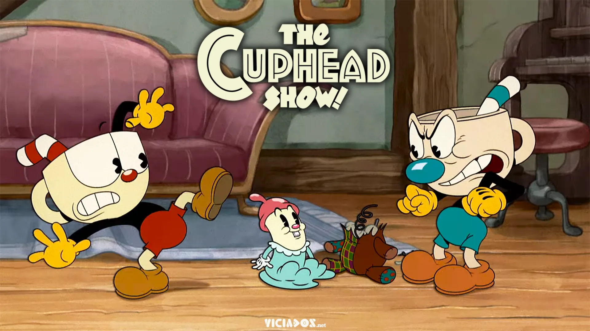
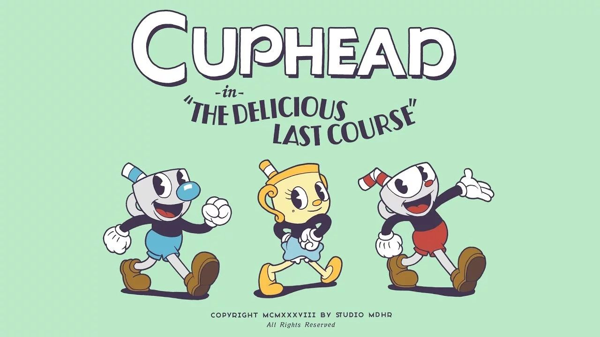

Cup Head
Cuphead é um jogo eletrônico de run and gun e plataforma criado pelos irmãos canadenses Chad e Jared Moldenhauer através da Studio MDHR. O jogo foi inspirado no estilo de animação Rubber hose (em português, "mangueira de borracha") usado em desenhos animados da Era de Ouro da animação americana, como o trabalho dos estúdios Fleischer Studios, Warner Bros. Cartoons e Walt Disney Animation Studios, procurando manter a obra em qualidades subversivas e surrealistas. O jogo foi lançado em 29 de setembro de 2017 para Xbox One e Microsoft Windows.
Cuphead apresenta dois jogadores que controlam o personagem-título e seu irmão Mugman, em uma aventura através da fictícia Inkwell Isle para derrotar uma série de chefes para pagar uma dívida adquirida com o diabo. O jogo foi elogiado por seu estilo de arte, jogabilidade, trilha sonora e dificuldade. Foi um sucesso de crítica e comercial, ganhando vários prêmios e vendendo mais de seis milhões de cópias em três anos. Uma expansão, sob o subtítulo The Delicious Last Course, foi lançado em 30 de junho de 2022. Uma série animada baseada no jogo, intitulada The Cuphead Show!, produzida pela Netflix, estreou em 18 de fevereiro de 2022.
O desenvolvimento de Cuphead começou em 2010, apenas com os irmãos Chad e Jared, os irmãos trabalhavam no jogo de suas respectivas casas em Toronto e Saskatchewan. Nesse ponto, o jogo era consideravelmente menor, o jogo consistiria inteiramente em uma série de oito batalhas de chefe no estilo de Mega Man, pois como o estúdio era pequeno, fazer algo maior do que isso seria difícil, especialmente considerando a natureza demorada do estilo artístico, porém, depois de algumas exibições muito bem recebidas em feiras como a E3, o estúdio percebeu que o jogo precisava ser maior para satisfazer o público enorme que estava interessado no seu estilo único. Isso significava mais chefes, níveis de plataformas projetados adequadamente e um mundo que os unisse. Também exigiu muito mais pessoas e muito mais tempo.
Desde 2015, o estúdio cresceu dramaticamente. O que começou como um trio agora é uma equipe de 19 pessoas. Isso inclui um total de cinco artistas, manipulando tudo, desde arte conceitual até animação.
Hístoria de criação do jogo
Processo de animação do jogo
Cuphead: Don't Deal With the Devil.
No lugar fictício de "Ilha Tinteiro", Xicrinho (nome de Cuphead na adaptação brasileira do jogo) e seu irmão Caneco (nome de Mugman na adaptação brasileira do jogo) são dois garotos amantes da diversão que vivem sob o olhar atento do Velha Chaleira. Contra os avisos do ancião, os irmãos se aventuram longe de casa, acabam entrando no Cassino do Diabo e começam a jogar dados. Após uma série de vitórias, o próprio Diabo se oferece para aumentar as apostas, dizendo que se Xicrinho e Caneco puderem ganhar mais uma rodada, eles receberão todo o dinheiro no cassino, mas se perderem também perderão suas almas. Xicrinho perde no jogo de dados e junto a Caneco imploram por misericórdia. O Diabo faz um acordo com eles: se conseguirem coletar todos os "contratos de alma", que dão direito à posse das almas, de seus devedores fugitivos até a meia-noite do dia seguinte, eles poderão ter uma chance. Eles visitam o Velha Chaleira, que lhes dá uma poção que lhes permite disparar rajadas de seus dedos para ajudar em sua busca, mas também os adverte que os devedores podem se transformar em monstruosidades quando forem cobrados.
 Os irmãos viajam pelas Ilhas Tinteiro (1, 2 e 3), lutando contra os moradores que perderam suas almas para o Diabo, a fim de obter seus contratos. Ao entrar na segunda ilha, o Velha Chaleira os aconselha a "fazer a coisa certa" quando encontrarem com o Diabo novamente. Na entrada da terceira ilha, aparece uma cena em que o Rei Dado adverte o Diabo sobre a haver "algo suspeito" sobre os garotos. Após enfrentar uma série de inimigos poderosos e reinvindicar todos os contratos, eles retornam para o cassino e encontram o gerente, o Rei Dado, que bloqueia o caminho. Ele perdeu uma aposta com o Diabo, presumivelmente sobre se Xicrinho e Caneco seriam capazes de completar sua tarefa, e coloca os irmãos para jogar uma espécie de "jogo de tabuleiro", enfrentando alguns de seus capangas pelo caminho. Ele, finalmente, decide confrontar Cuphead e Mugman, mas é derrotado por eles, dando passagem para encontrar o Diabo.
Os irmãos viajam pelas Ilhas Tinteiro (1, 2 e 3), lutando contra os moradores que perderam suas almas para o Diabo, a fim de obter seus contratos. Ao entrar na segunda ilha, o Velha Chaleira os aconselha a "fazer a coisa certa" quando encontrarem com o Diabo novamente. Na entrada da terceira ilha, aparece uma cena em que o Rei Dado adverte o Diabo sobre a haver "algo suspeito" sobre os garotos. Após enfrentar uma série de inimigos poderosos e reinvindicar todos os contratos, eles retornam para o cassino e encontram o gerente, o Rei Dado, que bloqueia o caminho. Ele perdeu uma aposta com o Diabo, presumivelmente sobre se Xicrinho e Caneco seriam capazes de completar sua tarefa, e coloca os irmãos para jogar uma espécie de "jogo de tabuleiro", enfrentando alguns de seus capangas pelo caminho. Ele, finalmente, decide confrontar Cuphead e Mugman, mas é derrotado por eles, dando passagem para encontrar o Diabo.
O Diabo, ao ver os irmãos com todos os contratos que ele pediu, exige que eles entreguem os contratos em troca de "se juntar a sua equipe". Se o jogador aceitar, o Diabo transforma Xicrinho e Caneco em seus lacaios demoníacos e o jogo termina, com a tela inicial tendo sua música de trás para frente. Se o jogador declinar, o Diabo fica furioso com a recusa dos irmãos em honrar o acordo e os enfrenta pessoalmente. No fim, Xicrinho e Caneco triunfam sobre ele, e queimam os contratos de alma, liberando e devolvendo a alma de todos os devedores, que por sua vez honram os irmãos pela bravura e nobreza de seus atos com gritos de comemoração.
O jogo termina dizendo que: "Os irmãos prometeram nunca mais se meterem em encrenca, e eles não se meteram - até a próxima vez, é claro! Mas isso é outra história...".
Cuphead: The Delicious Last Course
Cuphead: The Delicious Last Course é um videogame lançado em 30 de junho de 2022. The Legendary Chalice retorna como um novo personagem jogável conhecido como "Ms. Chalice" em sua forma jogável sempre que Cuphead e/ou Mugman usa o Astral Cookie como um charme (se você ativou o modo de 2 jogadores, você se revezará sendo a Sra. Chalice), e há novos chefes, níveis e um novo personagem aparentemente amigável chamado Chef Saltbaker.
Cuphead e Mugman são informados de que The Legendary Chalice precisa de sua ajuda e tem que viajar para uma ilha distante . O Cálice Lendário, dentro do plano astral em sua forma fantasma, oferece um biscoito a Mugman. Mugman aceita alegremente, sem saber que ele e The Legendary Chalice trocariam de lugar, efetivamente transformando-a na Sra. Chalice (bem como transformando-o em sua forma fantasma). A Sra. Chalice os leva para conhecer o Chef Saltbaker e desvendar seu grande esquema: criar a já mencionada Wondertart que a trará de volta à vida, permanentemente.
O trio viaja pela Ilha Inkwell, lutando contra cinco dos chefes para obter os cinco ingredientes para o Wondertart. Depois que todos são recolhidos, os protagonistas voltam para preparar o Wondertart, mas o Chef Saltbaker está misteriosamente ausente; no entanto, uma porta para o porão é revelada, conforme os protagonistas passam por ela. Uma vez no final, eles encontram Saltbaker no final, que lhes revela que os estava usando apenas para seu próprio benefício, tendo-os explorado o tempo todo. Saltbaker também revela que o Wondertart na verdade requer uma alma literal, tendo sequestrado um dos amigos do jogador enquanto eles estavam fora. Com os protagonistas lá, Saltbaker planeja despachá-los para continuar com seus planos, mas ele é simplesmente derrotado após uma longa batalha; com isso, seu amigo desaparecido é libertado, e se um dos jogadores estava jogando como Ms. Chalice, troque de lugar novamente. De toda aquela luta, a padaria desabou, como os três protagonistas e Saltbaker conseguem, onde Saltbaker lamenta sua perda. Embora não seja mais capaz de fazer com que o Wondertart a reviva, a Sra. Chalice dá de ombros e afirma que não vai comprá-lo se exigir outra alma, desde que ela faça novos amigos ao longo do caminho.
No epílogo, Chef Saltbaker é preso e encaminhado ao tribunal, onde o juiz o ordena a prestar serviço comunitário. Quando seu serviço comunitário termina, Saltbaker reconstrói sua padaria e faz doces para todos, possivelmente como um presente de desculpas.